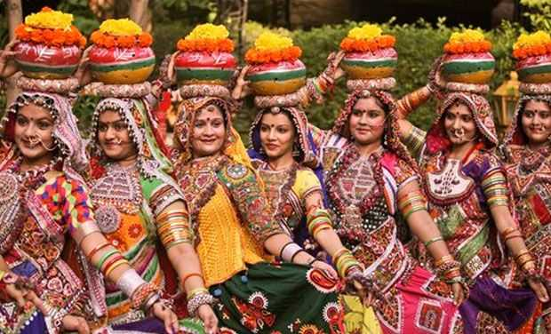
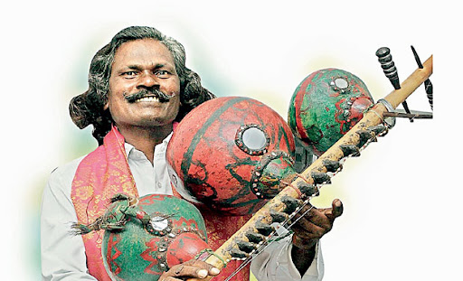

Perini Shivatandavam
Perini Shivatandavam is an ancient dance form that originated in the state of Telangana. It is known for its vigorous movements and powerful expressions.
Here are some key points about Perini Shivatandavam:
Origins: Perini Shivatandavam has its roots in the Kakatiya dynasty, which ruled over the Telangana region during the medieval period. It was traditionally performed by male warriors before going into battle, as a form of worship to the Hindu god Shiva.
Elements: Perini Shivatandavam is characterized by its dynamic footwork, intricate hand gestures, and dramatic facial expressions. The dance involves fast-paced movements, jumps, and spins, symbolizing the cosmic dance of Lord Shiva.
Costumes: Performers of Perini Shivatandavam typically wear traditional attire, including brightly colored dhotis (men's garments) and ornaments such as waistbands, anklets, and armlets. The costumes are designed to enhance the visual appeal of the dance and accentuate the movements of the performers.
Music: Perini Shivatandavam is accompanied by traditional Telugu music, which features rhythmic percussion instruments such as the mridangam, dhol, and tambura. The music sets the pace and mood of the dance, providing a vibrant backdrop for the performers.
Overall, Perini Shivatandavam is celebrated for its energy, athleticism, and spiritual significance, and it continues to be an important part of Telangana's cultural heritage.

Garadi
Garadi is a traditional martial art form practiced in the state of Telangana. It combines elements of combat techniques, physical fitness, and spiritual discipline.
Here are some key points about Garadi:
Origins: Garadi has its origins in ancient Indian martial arts, particularly in the techniques used by warriors and soldiers in combat. It was traditionally practiced by the Kshatriya community as a means of self-defense and warfare.
Techniques: Garadi incorporates a variety of combat techniques, including strikes, kicks, blocks, and grappling maneuvers. Practitioners are trained to use their bodies as weapons, employing both offensive and defensive tactics to overcome opponents.
Training: Training in Garadi typically begins at a young age, with students learning basic stances, movements, and exercises to develop strength, agility, and coordination. As they progress, they are taught more advanced techniques and strategies for combat.
Philosophy: Garadi is not just a physical discipline but also a spiritual one, emphasizing principles such as discipline, courage, and honor. Practitioners strive to cultivate a sense of inner strength and resilience, as well as a deep respect for their opponents and the art itself.
Overall, Garadi is valued for its practical applications in self-defense, its emphasis on physical fitness and mental discipline, and its role in preserving Telangana's martial heritage.
